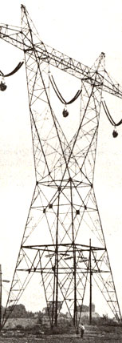

The Public And Powerline
The people challenged the Power Authority of the State of New York (PASNY) unsuccessfully. This battle however, will benefit future powerline vs. the public conflicts.
By the Mother Earth News editors
March/April 1980
A classic case of government against the people...
This is a story about a small bunch of independent and stubborn rural folks who joined together to fight a large state utility.
And you might as well know right now that the people lost: The electric company in question (the Power Authority of the State of New York) successfully usurped large pieces of land and constructed an ugly, irritating, and possibly dangerous 765kilovolt powerline. In fact, the 155mile stretch of giant transmission cables is "on line" today, and carrying imported electric current from Quebec ... across prime upstate farmland ... and down toward urban New York City.
So, in one sense, the outcome of this story will be a simple one: The utility did get its way and did build its huge line. However, if you look closely at the results of the people-versus-powerline conflict, you might just conclude that the rural New Yorkers (along with a lot of folks in different states who are right now fighting other electric companies) are-in the long-run energy battle-actually going to win . . . and partly as a result of this particular powerline struggle.
But the reasons for that optimistic conclusion won't be clear to you unless we back up and tell this tale from the very beginning, starting with . . .
THE POWER COMPANY
In 1973, the Power Authority of the State of New York (PASNY) decided to build a 155-mile, 765-kilovolt electric line from Fort Covington (a town near the Canadian border) south to Utica. Because PASNY is owned by the state, the utility could sell tax-free bonds to conveniently raise all the funds necessary for the immense construction job. The corporation could also-by virtue of being "public"easily sidestep the court injunctions and environmental restrictions that would apply to any privately owned company.
Moreover, PASNY had little trouble exercising the power of eminent domain and taking the needed land right-of-ways from the regional farmers . . . w hile offering as little as $150 an acre for these permanent land-use privileges and leaving the acreage's "owners" stuck with paying the annual property taxes! And on top of such none-too-subtle maneuvers, the giant public corporation (unlike any private company) didn't have to demonstrate to anyone that there was an economic or energy need for the large-scale construction/ land-grabbing project to begin with!
As you might imagine, these various public utility "privileges" gave PASNY quite a lot of free rein. After all, what soundly run private company would attempt to build a set of giant transmission towers capable of carrying 4,000 megawatts of electricity . . . if the business organization had contracted to buy only 800 megawatts of current from Quebec in the first place? What nongovernment corporation would brazenly purchase over $50 million worth of expensive steel construction materials ... when the proposed powerline had not even been legally approved? And what independent enterprise could get governmental permission to begin a $200 million undertaking . . . before the builders had even faced health and safety hearings about the project's potential dangers?
Well, no "normal" firm would ever be able to take such steps, right? But PASNY could . . . because, you see, PASNY is one powerful power company.
THE PEOPLE
Opposed to this mega-utility were a few upstate New York "North Country" residents like Jerry Moeller . . . a lean, hold-a job-on-the-outside, raise-what-I-can-when-Ican, work-hard-to-keep-all-of-it-together small farmer. Actually, Mr. Moeller wasn't the type of person who'd be inclined to protest any public company. In fact (before the trouble started), he'd always been -as a friend once said-"a mild-mannered, upstanding fellow who'd never questioned the government". So naturally, when Jerry got a letter saying the company might possibly put a powerline through part of his land, the farming citizen-and his wife, Doris assumed that the words "a powerline" referred to one of the standard wooden-pole-and-wire rigs that carry electricity to any rural person's home, and so he didn't raise any fuss about it.
Two years later, a PASNY representative came to the Moellers' house to get their signatures on the right-of-way easement papers for the company's powerline. By that time, though, Jerry and Doris had learned just what kind of line PASNY intended to build . . . and knew that the proposed 765kilovolt Quebec-to-Utica transmission complex-which would include 175-foot-tall towers and be as powerful as the biggest voltage carrying system in use anywhere on earth-was far from an ordinary electric hookup.
The couple had also begun to hear some disturbing reports about the biological hazards associated with "765's" (an Ohio beef farmer, for instance, told Jerry that his breeding cattle had produced only 10% of their normal calf crop since having been grazed under that midwestern state's infamous 765 line). After receiving such information, the Moellers naturally approached the construction proposal with a slightly more cautious attitude.
But the gruff utility spokesman-who, in Doris's words, was "arrogant, derogatory, and evasive"-refused to address the Moellers' concerns honestly. In fact, the company man became so angry at the couple's unwillingness to sign without question that-he threw down the easement papers and stomped out of the house with the warning: "Go ahead! Fight this line if you want to . . . but we'll win!"
THE BARSE ELM
And you'd better believe that the Moellers did fight the proposed 765! As a matter of fact, lots of independent-minded North Country folk-Mohawk Indians, farm wives, land use planners, midwives, ministers, professors, students, dairymen, immigrants, and stogie owners-began forming loose coalitions all along the proposed 155-mile construction corridor. Initially, the groups pursued their cause through the appropriate legal channels: They talked with government representatives, argued with the power company, and appealed to the courts. But once the local folk 'realized that such well-intentioned efforts were in vain (in one instance, PASNY actually managed to ig nore a state Supreme Court injunction against further construction), they turned to nonviolent civil disobedience. People began sitting on power company tractors, lying down in the path of construction roads, and placing farm equipment in the way of utility workers.
The growing confrontation reached its climax in January 1977 . . . at the foot of a stately, 95-year-old elm tree on the Barse family's North Covington farm. Protesters bodily guarded the tree and managed-for a week-to delay the felling of the aged hardwood. By the end of that heated clash (when the last resister was taken out of the tree's branches), a dozen people had been arrested and sentenced to jail terms . . . and their incarceration sparked a mass 1,000person protest march in isolated Edwards, New York on March 12, 1977.
The New York North Country-normally a placid, folks-mind-their-own-business area had never seen anything like this populist uprising. But neither had PASNY.
As one company crewman said at the time, "I've dealt with earthquakes, snowstorms, and floods . . . but hell, I never had to deal with people before!"
THE END?
Unfortunately, the deeply felt protest wasn't nearly enough to actually stop PASNY. And the state Public Safety Commission (PSC)-the last regulatory agency with any control over the highhanded utility was equally helpless to prevent the powerline's construction. The PSC did hold extensive health and safety hearings concerning the 765 project, though (while the line was going up!) . .. and its members heard several independent scientists present evidence that the type of electromagnetic fields produced by powerlines may cause electric shock, headaches, tension, fatigue, nausea, amnesia, cataracts, reduction in sexual capabilities of both people and animals, and more. But since the instances these researchers related did not come from laboratory-controlled experiments (just from "real life"), PASNY scientists argued that such testimony lacked proper scientific verification and was therefore invalid.
One witness, though, actually had run some relevant strictly controlled trials . . . a Dr. Andrew Marino of Syracuse, New York had exposed rats to extremely low frequency fields and discovered that the electromagnetic environment permanently stunted the animals' growth. Marino was harassed for his testimony: PASNY spokesmen heatedly cross-examined him (at one point, for eight consecutive hearing days), and the final PSC health report devoted an astonishing 49 of its 156 pages to criticizing the Syracuse scientist's experiments, credibility, and personal character.
Still, the final papers published after the Public Safety Commission's hearings did admit that the 765-KV line(s) "will probably cause biological effects in humans exposed to them on a chronic basis". And, in an attempt at compromise, the safety report recommended widening the powerline's right-of-way, allowing some people living near the line the right to have their homes bought or moved by PASNY, and establishing a utility funded long-term health study of area residents. But PASNY-which was as unbudging toward the PSC as it had been toward the landowners-tied all the suggested modifications up in court ... and finished building the 765 line just the way the utility had planned.
NO, NOT THE END
The people of upstate New York had lost the battle for their land and the right of self-determination. The powerline was completed and activated, and-on September 1, 1978Doris Moeller sadly wrote: "The serenity of early morning on our North Country farm was shattered forever today. The nearest cable is 1,000 feet away from our house, but the current it carries sounds like a swarm of bees ... there must be a lot of electricity zapping off that powerline."
Yes, the New York fight to stop the Quebec-to-Utica 765 was unsuccessful ... but, amazingly enough, the struggle did kindle many positive results. PASNY's chairman-tired of dealing with such pub lic pressure-agreed to scuttle all plans for future 765's during his tenure. Along with that, the New York legislature passed a law demanding that the Power Authority henceforth show proper need for any proposed construction projects.
The powerline struggle also had an unforeseen impact on the future of nuclear power in upstate New York. This surprising side effect came about after the local residents realized that one feasible purpose for building such a gigantic powerline (after all, the capacity of the 4,000megawatt line was five times the power PASNY had contracted to buy from Canada) could be to carry electricity from atomic reactors in the North Country. Folks then investigated the utility's long-range planning documents and found that-sure enough-PASNY intended to build complexes of nuclear plants in the sparsely populated region. Resistance . spawned by that discovery helped persuade the state's governor to order a statewide moratorium on atomic plant construction.
The 765 fight had other, more subtle benefits for the North Country as well. As a result of the struggle, the people in the area were united in a way they had never been before . . . ready to resist effectively any other major government intrusions and eager to use their new-found togetherness for positive self-help projects (such as establishing a regional food producers' coop).
The upstaters also began to explore energy alternatives. Small solar, insulation, and recycling businesses started springing up in the region. In addition, one former line-fighting coalition (Upstate People for Safe Energy Transmission) created a cooperative sun-power workshop in order to educate themselves about do-it-yourself solar projects. And individual North Country families like the Moellers-who now heat their domestic water with their wood stove-began exploring other home-sized energy options.
On a large scale, the 765 power struggle in New York also became-as the locals there proudly point out-an inspiration and source of instruction for other groups engaged in powerline fights. The New Yorkers have helped coalitions from Minnesota to Australia learn the potential hazards of giant electric lines and ways to resist the unfair encroachment of big government on small farmers' lives.
YOU CAN TOO FIGHT CITY HALL
So the North Country powerline fight was not all in vain. And (in many other places today) such people-utility conflicts are still going on. The issue is being contested in states and provinces like Kansas, Montana, California, and Ontario . . . while a large 800,000-volt DC line-running from the North Dakota coal fields to the Minneapolis/St. Paul area-has engendered an especially long-running and violent controversy in Minnesota.
And it's certainly possible that there is-or soon will be-such a conflict where YOU live. If so, remember the New York struggle. You don't have to stand passively by while a big utility shoves its project down your throat and runs roughshod over your land. Instead, you too can band together with others to defend your rights ... and fight powerlines with "people lines"!
EDITOR'S NOTE: If you'd like information about organizing people to combat big utilities or facts and figures concerning the health and legal aspects of powerlines, we suggest you contact the General Assembly to Stop the Powerline (Box 5, Lowry, Minnesota 56349) and/or Anne Marshall Woiwode of the Environmental Action Foundation's Utility Clearinghouse (724 Dupont Circle Building, Washington, D.C. 20036). The latter group keeps track of citizens' coalitions around the country that are involved in utility fights and offers (for free) an excellent resource list-the Utility Action Guide-of power-company-related readings. As always, MOTHER earnestly requests that you kindly compensate the two organizations for their time and trouble . . . by sending a couple of dollars along with any requests.
 Mohawk Indian Celia Laffin confronts ""Frenchy"", a worker hired by PASNY to fell the Barse elm... and John Lauzon protects his own dairy farm. |
 A 175- foot (and not yet wired) 765- kilovolt powerline tower dwarfs both "" the normal-sized"" transmission setup and the full-grown man in this photo. |
|